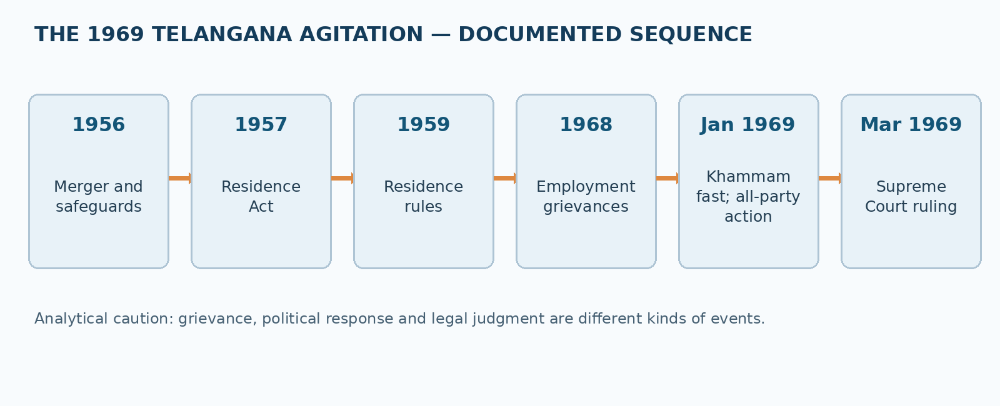
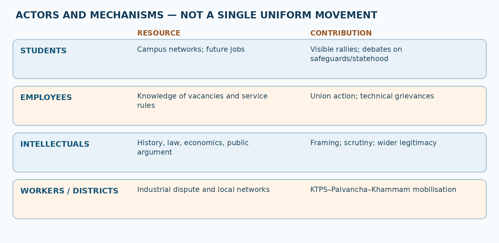
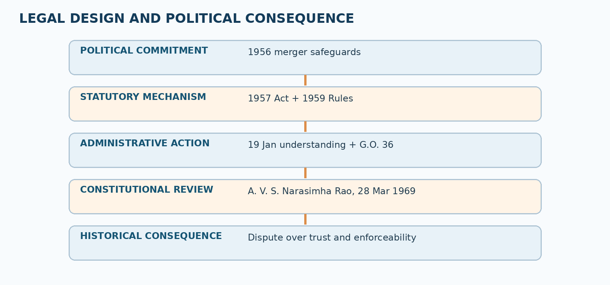

Paper VI · Unit I · Topic 4 — Violation of Employment and Service Rules and the 1969 Jai Telangana Movement
TGPSC Group I Mains | Telangana Movement and State Formation | Original explanatory study chapter | Draft requiring independent academic review | 25 October 2026
Syllabus text, commission-hosted scheme and syllabus: “Violation of Employment and Service Rules: Origins of Telangana Agitation- Protest in Kothagudem and other places, Fast unto Death by Ravindranath; 1969 Agitation for Separate Telangana. Role of Intellectuals, Students, Employees in Jai Telangana Movement.” This wording was checked against the original commission-hosted Group I scheme-and-syllabus PDF dated 2022. A separate direct reopening of Notification 02/2024 was not successful; therefore this chapter does not claim direct 2024 PDF authentication.
Question provenance: All MCQs and mains prompts in this chapter are newly authored study exercises. They are not labelled or represented as verified official previous-year questions.
Syllabus coverage and how to use this chapter
This unit links a legal question—who qualified for recruitment in Telangana after the 1956 merger—to a political question—why demands to implement safeguards became demands for separate statehood. Study the employment rules first, then the grievances at Kothagudem and Palvancha, the January 1969 fast and the movement's spread. Finally analyse the distinct contributions of students, employees and intellectuals. Do not treat all participants as having identical objectives or all reported figures as uncontested facts.
Syllabus map: employment and service-rule violations → sections 1–6; origins and Kothagudem/other protests → sections 7–10; Ravindranath's fast → sections 11–12; 1969 separate-state agitation → sections 13–18; intellectuals, students and employees → sections 19–22; analytical case studies, revision, original MCQs and structured mains answers follow.
1. The historical problem: regional safeguards inside a linguistic state
The creation of Andhra Pradesh on 1 November 1956 brought the Telugu-speaking Telangana region of the former Hyderabad State together with the earlier Andhra State. A shared language did not erase differences in administrative experience. Hyderabad State had its own service regulations, revenue structures, educational opportunities and patterns of access to government employment. Political negotiations over merger recognised that unequal starting conditions could make formally uniform recruitment and expenditure rules substantively unequal. The resulting safeguards were therefore intended to protect a less advantaged region during institutional integration.
For many educated Telangana families, public employment was not merely an individual career option. A government post offered a stable salary, social mobility and a visible share in the new state's authority. If jobs earmarked for residents were filled through transfers, disputed certificates or exemptions, the perceived injury was both material and constitutional: local candidates might lose opportunities, while promises made at merger appeared unenforceable. This helps explain why recruitment rules could become the focal point of a mass regional movement rather than a narrow labour dispute.
A careful historian separates three propositions. First, a safeguard existed in a specified legal or political form. Second, particular appointments allegedly breached it. Third, the breaches were sufficiently widespread to explain a regional political mobilisation. Each proposition requires different evidence: statutes and orders for the first, personnel files and court records for the second, and contemporary press, petitions, organisations and later inquiries for the third. The central-government Srikrishna Committee's 2010 report documents allegations and the spread of agitation; it should not be misread as an appointment-by-appointment audit of 1960s personnel records.
2. The Gentlemen's Agreement and the employment bargain of 1956
The 1956 Gentlemen's Agreement was a political settlement accompanying merger, not a single self-executing recruitment statute. Its protective design included arrangements for regional representation, development expenditure, educational opportunities and employment. A crucial principle was that Telangana should not lose opportunities because the administrative and educational systems of the merging regions had developed differently. In practice, several protections depended on subsequent rules, executive implementation and continuing political willingness.
The distinction between a political promise and an enforceable rule matters. A candidate could invoke a particular statutory residence requirement in a recruitment dispute; a broader promise about fair regional development might instead require legislative oversight or administrative monitoring. Opponents of regional restrictions could argue that a common state needed a mobile workforce and uniform opportunities. Supporters answered that ignoring inherited disparities would reward the already advantaged and make the merger's safeguards meaningless. Both positions must be placed in their historical context, without assuming that all interregional migration was unlawful.
Failure to distinguish the categories produces weak mains answers. The agreement did not mean every post in Hyderabad city was permanently reserved for every Telangana-born applicant, nor did it mean any person from Coastal Andhra was automatically disqualified from every state service. The exact cadre, date, mode of appointment, rule in force and applicable exception had to be examined. This administrative detail became politically explosive precisely because public debate often compressed many different kinds of appointments into the phrase 'non-local employment'.
3. Mulki status, residence and the problem of changing jurisdictions
'Mulki' referred historically to local status under Hyderabad State's service framework. The concept developed before the linguistic merger and was associated with residence, domicile and service eligibility. The Hyderabad rules should not be casually equated with the later 1959 Andhra Pradesh residence rules: they arose under different authorities and contained distinct formulations. The meaning of 'local' could also vary across a recruitment notification, a judicial case, a political speech and a retrospective account of the movement.
A second complication arose when Hyderabad's earlier legal territory was reorganised. A rule once framed with reference to a princely state could not be applied mechanically to one region of a newly enlarged state without examining the Constitution and the law preserving or replacing it. A residence requirement that is socially defensible may nevertheless be constitutionally invalid if the authority imposing it exceeds its power. Conversely, a legal judgment invalidating one mechanism does not establish that the underlying complaint about unequal access to jobs was imaginary.
In a model answer, explain why the legal category mattered: it determined eligibility, proof of residence, transfer treatment and possible remedies. Explain why it was contested: a resident candidate and an employee appointed from another region could both assert legitimate interests. And explain why historical language matters: 'Mulki', 'domicile', 'resident', 'local candidate' and 'Telangana employee' should not be treated as perfect synonyms. A good administrator would publish the operative definition and appeal procedure before making any displacement decision.
4. The Public Employment (Requirement as to Residence) Act, 1957
Parliament enacted the Public Employment (Requirement as to Residence) Act, 1957 to regulate residence requirements in certain public appointments. It was linked to Article 16(3) of the Constitution, which permits Parliament—not an ordinary state legislature acting alone—to prescribe residence requirements for public employment within the constitutional scope of that provision. Section 3 attempted to authorise rules relating to specified appointments in the Telangana area. The subsequent Andhra Pradesh Public Employment (Requirement as to Residence) Rules, 1959 prescribed a residence qualification for covered posts.
The 1959 framework illustrates the difference between a statutory enabling provision and a rule made under it. If the enabling provision lacked constitutional authority for residence in only part of a state, a subordinate rule could not repair that defect. The case law therefore cannot be reduced to 'the Supreme Court opposed Telangana safeguards'. The Court was resolving a particular constitutional question about the permitted geographic scope of residence qualifications under Article 16(3). That legal question intersected with, but did not exhaust, the historical argument about regional justice.
The scheme also contained post-specific distinctions, including provisions concerning offices in Hyderabad and Secunderabad. For an examination problem, never infer coverage from the workplace's location alone. Identify whether the vacancy fell within the statutory category, whether the appointee satisfied the prescribed residence conditions, and whether a later order attempted to alter the incumbent's posting. This stepwise method avoids the common error of calling every transfer into Telangana an automatic statutory violation.
5. The constitutional tension: equality, residence and regional correction
Article 16(1) guarantees equality of opportunity in public employment; Article 16(2) prohibits discrimination on listed grounds, including residence, subject to the Constitution's express exceptions. Article 16(3) allows Parliament to legislate residence requirements within its stated limits. In 1969, the central question was whether a rule prescribing residence within Telangana as a region of Andhra Pradesh, rather than within a whole state or union territory, fell within that exception. The controversy shows how a seemingly technical phrase can reshape the political options available to a government.
There are at least three defensible analytical viewpoints. Regional equity stresses that equal competition among unequally prepared populations may perpetuate historic disadvantage. Individual equality stresses that employees who entered service under existing procedures should not be displaced without legal authority or fair treatment. Federal design asks which institution may establish a regional preference and under what constitutional provision. The historical tragedy is that political promises, administrative practices and constitutional competence did not always align.
An answer should not conflate a court's invalidation of a particular statutory method with a ban on all future constitutionally authorised local-cadre systems. The subsequent history of Article 371D and Presidential Orders belongs primarily to the next syllabus unit. Here it is enough to identify the problem revealed in 1969: a safeguard could be popular and politically promised, yet its enforcement could fail judicial review. A sustainable settlement required both constitutional validity and administrative credibility.
6. A. V. S. Narasimha Rao v. State of Andhra Pradesh, 28 March 1969
The Supreme Court's decision in A. V. S. Narasimha Rao and Others v. State of Andhra Pradesh and Another (28 March 1969; reported as (1969) 1 SCC 839 and AIR 1970 SC 422) provides an unusually clear documentary window into the dispute. The judgment recounts the 19 January 1969 all-party understanding and the government's G.O. Ms. No. 36 dated 21 January 1969, under which certain non-domicile employees appointed after merger were to be relieved from Telangana posts and accommodated in Andhra-region positions without a break in service.
The Court held that the part of the 1957 Act authorising residence requirements for the Telangana area, and the relevant 1959 rule based on it, were beyond the constitutional permission in Article 16(3). The decision turned on the distinction between residence in a state and residence in a part of a state. It therefore quashed the impugned arrangement. The judgment is strong evidence for the dates, legal instruments, categories of parties and reasoning it expressly records; it is not a source for every disputed allegation about Kothagudem recruitment or the movement's death toll.
For a mains answer, state the facts, constitutional issue, holding, and political implication in separate sentences. Facts: employees challenged the proposed transfer mechanism. Issue: the scope of Parliament's Article 16(3) power. Holding: the challenged regional residence framework exceeded that scope. Implication: the government's promise of swift administrative correction encountered a constitutional barrier, sharpening mistrust. Avoid the misleading shorthand that the Court 'abolished the Mulki rules' in every historical sense; later litigation about older Hyderabad rules followed a different legal path.
7. How a grievance becomes a regional movement
A movement usually requires more than dissatisfaction. The Telangana agitation developed through an interaction of structural inequality, specific triggers, organisational networks and political opportunity. Structural concerns included access to public jobs, education, irrigation and regional expenditure. The trigger was the visibility of disputed appointments and retrenchment at institutions such as the Kothagudem Thermal Power Station. Networks of workers, students, local leaders and employee associations transformed workplace complaints into public meetings, demonstrations and fasts.
The sequence matters because it prevents a simplistic story in which a single hunger strike suddenly created regional consciousness. Telangana had a history of Mulki-related agitation in 1952, and merger-era safeguards were debated before 1956. By the late 1960s, the belief that promised protections had not been implemented provided an interpretive framework through which new disputes were understood. Each reported appointment could be treated as evidence of a broader pattern; each administrative refusal could be read as evidence that the merger bargain was failing.
Social movements also evolve internally. Some early participants demanded rigorous enforcement of existing safeguards while others favoured immediate state separation. The distinction was strategic and substantive: the first position assumed the unified state could be repaired; the second argued that repeated non-implementation proved the need for separate political authority. Students, employees and politicians did not move from one position to the other at the same time. Good historical explanation preserves this diversity rather than projecting a later unanimous demand backwards onto every protester.
8. Kothagudem Thermal Power Station: employment and regional grievance
The Kothagudem Thermal Power Station at Palvancha became an emblem of the recruitment controversy. It was a major industrial workplace in the former Khammam region, where a dispute about appointments and the treatment of local workers could be seen and discussed in concrete terms. Contemporary and retrospective accounts connect protests there to allegations that local Telangana candidates had been overlooked and to the retrenchment or displacement of some workers. These accounts require careful verification of numbers: newspaper retrospectives often provide headcounts without reproducing original personnel registers.
A thermal power station concentrates several forms of authority. Recruitment may involve a public utility or statutory corporation rather than an ordinary government department; technical posts may require qualifications not evenly available across regions; workers may include permanent, temporary and contract staff. Therefore the existence of a regional grievance does not settle the legal question of which residence rule applied to which cadre. An exam answer that says 'all 1,400 employees were unlawfully appointed' would exceed the evidence and erase differences among posts.
The station's importance lies in symbolic transfer: a local workplace dispute became an accessible illustration of regional inequality. Kothagudem and nearby Palvancha were linked to wider networks through unions, student groups and local political organisations. The geographical point is useful: the movement's spark was not confined to Hyderabad's universities. Industrial towns and district centres helped transmit employment concerns into a state-wide political debate. Present the station as a catalyst, not as the sole cause of the movement.
9. Palvancha, Khammam and the geography of protest
The geography of the agitation is important for understanding mobilisation. Palvancha, near the power station, was associated with workers and the industrial dispute. Khammam town offered schools, colleges, public meeting spaces and a district-level political audience. Protest activity could move between these places through speeches, processions, local press and networks of teachers, workers and students. When accounts refer to the 'Kothagudem protest', they may be describing events spread across a connected industrial and urban area rather than a single location or day.
In the early phase, protest repertoires included meetings, petitions, demonstrations and hunger strikes. A fast is a particularly powerful form of public communication: it places the protester's body at risk and forces observers to confront the perceived seriousness of the grievance. Yet its meaning depends on stated demands and political context. A fast demanding implementation of safeguards should not automatically be described as beginning with an unqualified demand for statehood, even if subsequent supporters articulated that objective.
Later narratives often compress the chronology into a dramatic chain: dismissal at the plant, fast at Khammam, student unrest, state-wide movement. That sequence is a useful teaching framework but not a substitute for a dated event register. The stronger approach is to distinguish background grievances in 1968, fasts in January 1969, widening student and employee action, and subsequent political negotiations and court intervention. Each transition reveals a different mechanism of mobilisation.
10. The role of worker organisations and Telangana non-gazetted employees
Non-gazetted employees occupy an important middle position between the state and the public. They know how appointments, transfers and seniority lists work, and they can communicate grievances through associations. In the Telangana agitation, employee organisations helped turn a general claim about 'outsiders taking jobs' into demands about vacancies, recruitment categories, service rules and transfers. Their organisational capacity made strikes and collective representations possible across offices rather than at a single industrial plant.
Employees also faced a conflict of duties. As public servants, they were expected to maintain administration and comply with lawful service regulations; as citizens and workers, they could express concern over perceived regional discrimination. Historical accounts should acknowledge both. A strike can signal the depth of discontent, but prolonged interruption of public services can impose costs on residents whom the movement seeks to represent. Governments, meanwhile, must distinguish legitimate employee grievances from unlawful conduct and avoid using disciplinary processes to silence lawful expression.
For analytical questions, trace the employee contribution through information, coordination and institutional leverage. Information: identifying disputed appointments and vacancy patterns. Coordination: creating common demands across departments. Leverage: making the controversy difficult for the government to treat as isolated student unrest. An employee union's allegation is important evidence of mobilisation, but the actual legality of an appointment must still be tested against the applicable rule and recruitment record.
11. Annabathula Ravindranath's fast, January 1969
Accounts of the movement identify student activist Annabathula Ravindranath with an indefinite fast beginning 8 January 1969 at Khammam. The fast was associated with implementation of Telangana safeguards and the demand for fair employment of local residents; as agitation developed, the question of separate statehood became increasingly prominent. The original commission syllabus explicitly singles out Ravindranath, which makes the episode essential for a Paper VI answer. Contemporary official records of the fast's full daily sequence are harder to access than later historical narratives, so exact details beyond the well-attested date and location should be attributed carefully.
The fast mattered for three reasons. First, it converted a complex administrative grievance into a moral claim that ordinary citizens could understand. Second, it connected workers' concerns to student organisations and the educated unemployed. Third, it attracted support from local political figures, enabling a district-centred protest to reach the regional press and Hyderabad. The tactic did not itself resolve questions of recruitment legality; rather, it increased pressure on political authorities to respond.
A good answer distinguishes the individual event from its movement effect. Do not portray Ravindranath as the only organiser or the sole originator of the Telangana idea. Earlier Mulki protests, the KTPS dispute, student networks and employee unions had already prepared the ground. Nor should a study note treat every later anecdote about the fast's duration, participants or exact location as an authenticated primary-source fact. The historically secure conclusion is that the fast helped accelerate mobilisation at a decisive moment.
12. Fasts, protest ethics and the limits of dramatic narration
A fast unto death belongs to the repertoire of nonviolent moral protest, but its political interpretation is contested. Supporters see voluntary self-sacrifice as a legitimate appeal when normal institutional remedies have failed. Critics warn that a fast can place intense pressure on public decision-makers without resolving the legality or distributive effects of the demand. The constitutional state must respond humanely to the protester while evaluating demands through transparent legal procedures. This tension is valuable for Paper VI because it links political history to democratic ethics.
Historical writing can become misleading when it focuses entirely on a dramatic individual. Workers who organised meetings, students who distributed leaflets, teachers who built solidarity and women who supported households during protests may disappear from the narrative. A more complete account treats Ravindranath's fast as a focal event within a network. It asks how information travelled, why students were receptive, how employees linked the dispute to service rules, and what response government officials considered feasible.
An administrative counterfactual clarifies the point. Suppose the government had immediately published a verified list of vacancies, eligibility conditions and disputed appointments, with an independent appeal mechanism. Some uncertainty might have been reduced, although the deeper debate about the merger and regional autonomy would remain. The fast's historical significance is therefore not proof that no administrative solution was imaginable; it demonstrates how the absence of trusted solutions helped a symbolic protest acquire regional force.
13. From safeguards to the demand for a separate Telangana
The 1969 agitation contained a crucial shift from implementation to reconsideration of the political arrangement itself. A demand to enforce the Gentlemen's Agreement assumes the merger can work if its conditions are honoured. A demand for a separate state asserts that persistent failure of implementation has undermined confidence in the integrated state's institutions. Both arguments drew upon regional identity, but they offered different remedies. Political organisers sometimes supported both as stages of a strategy; other participants considered them alternatives.
The demand for separation was not based on language difference. Telangana and Coastal Andhra shared Telugu, but their historical state formation, land relations, public administration and educational trajectories differed. The argument was that linguistic affinity alone did not guarantee equal participation in a unified state. This is why the States Reorganisation Commission's earlier caution about immediate merger remained relevant to later debates. In an examination answer, link the 1969 movement back to 1955–56 without suggesting that the Commission itself organised or endorsed the agitation.
The movement's diversity also cautions against retrospective certainty. Some protesters wanted enforcement of regional residence rules; some emphasised fiscal and educational safeguards; others concluded that separate statehood was the only credible guarantee. Students could change their position after confrontations with police, while political parties recalculated their stance as mobilisation spread. The transition from local grievance to statehood demand was a political process, not an automatic legal consequence of one disputed appointment.
14. Students and Osmania University as centres of mobilisation
Students became a highly visible force in the 1969 agitation. Osmania University was a major arena of discussion and protest, but student mobilisation extended to district colleges and schools. Students connected the service-rule question to their future prospects: education promised entry into professions and government employment, yet perceived regional disadvantage made that promise uncertain. Campus meetings, demonstrations and student action committees allowed grievances to circulate rapidly among peer networks.
Students were not a single political bloc. Some initially focused on implementing safeguards; others called for immediate separation. Disagreements over tactics, leadership and negotiation were inevitable in a large movement. Their participation nevertheless changed the scale and emotional character of the agitation. When young protesters faced arrests, injuries or police firing, the conflict moved beyond technical recruitment disputes into questions of democratic rights, public order and governmental legitimacy.
An analytically balanced account acknowledges both the constitutional right to peaceful assembly and the government's obligation to protect lives and property. Violence by any actor should be evaluated on evidence, not attributed automatically to an entire regional population or student body. The central-government Srikrishna Committee's retrospective account notes escalation in January 1969 and acknowledges that estimates of casualties and damage varied. Therefore avoid presenting a disputed casualty total as if it were a verified official count from a contemporaneous register.
15. Intellectuals, writers and the construction of a public argument
Intellectuals did not simply 'support' the agitation; they helped articulate why apparently separate grievances about employment, revenue and education could be interpreted as symptoms of a common regional problem. Teachers, scholars, journalists, lawyers and writers could translate legal provisions into accessible public explanations. Their interventions helped distinguish the claim for Telangana from an anti-Telugu or anti-migrant argument: the central issue was the legitimacy and implementation of agreed safeguards and, increasingly, regional self-government.
Public argument took several forms. Legal analysis examined residence rules and constitutional competence. Economic analysis questioned the allocation of regional revenue and development expenditure. Historical writing recovered Telangana's distinctive administrative and cultural past. Journalism reported meetings and clashes, while literary expression gave emotional shape to regional aspirations. These contributions were not identical in evidentiary value. A political poem can illuminate public sentiment but cannot establish the number of disputed appointments; a court judgment can establish legal reasoning but cannot alone measure popular support.
A mains answer should give intellectuals a specific causal role: framing the grievance, building a common vocabulary, questioning official explanations and connecting district events to state-wide debate. Avoid inventing a long list of personalities or attributing slogans and organisational posts without a reliable source. When naming an individual, identify the role actually documented. The best account explains how arguments moved between university seminars, newspapers, unions, legislative debate and public meetings.
16. The state government's dilemma and the January 1969 response
The Andhra Pradesh government faced competing demands: uphold equal service rights, honour merger safeguards, prevent disruption and avoid deepening regional mistrust. The all-party meeting on 19 January 1969 attempted to address grievances by proposing that non-domicile personnel occupying covered Telangana posts be shifted and accommodated elsewhere. G.O. Ms. No. 36 of 21 January 1969 gave administrative form to this approach. The dates and key mechanisms are documented in the Supreme Court's A. V. S. Narasimha Rao judgment.
The order's design reveals a compromise. It sought to create vacancies for qualified local candidates while protecting the continuity of service of affected employees through transfers or supernumerary posts. Yet the policy depended on the constitutional validity of the residence framework used to identify the protected vacancies. The March 1969 judgment undermined that legal foundation. This is a classic case of the gap between political agreement and enforceable administrative action.
The government's dilemma was not merely a choice between 'accepting' and 'rejecting' Telangana's grievances. Officials needed a reliable employee register, legally defensible criteria, funding for additional posts, and a mechanism for hearing affected staff. They also needed to communicate clearly about the limits of executive orders. Failure to do so could leave both local applicants and transferred employees believing they had been treated unfairly. A balanced answer assesses the state's response through intent, legality, implementation capacity and public trust.
17. Police response, public order and the human cost
As agitation spread, clashes, disruption and police intervention intensified. The central-government Srikrishna Committee's 2010 report describes police firing on 20 January 1969, subsequent escalation and substantial loss of life and property over the period of unrest. It explicitly notes that estimates of damage and fatalities varied. A careful study note therefore describes the human cost without converting a widely repeated memorial number into a verified official contemporaneous count.
The state has a legitimate duty to protect public safety, but coercive responses to mass protest can deepen alienation if perceived as disproportionate. Students and families may interpret police firing as evidence that the government values order over regional grievances; administrators may fear that unchecked violence will harm residents and essential services. Neither concern justifies ignoring the other. Historical analysis should examine the sequence of protests, warnings, force used, injuries, independent inquiries and subsequent political consequences where records are available.
Memorials and commemorations preserve the movement's moral significance, yet they are different kinds of sources from police registers or judicial findings. When writing about martyrs, maintain respect for victims while distinguishing commemorative memory from quantitative verification. This distinction strengthens rather than weakens the historical account: it prevents opponents from dismissing the whole movement because one casualty statistic cannot be independently substantiated.
18. The wider 1969 trajectory and the limits of this syllabus item
The 1969 agitation developed beyond its January beginnings through continuing protests, negotiations, political organisations and attempts at a settlement. The detailed course of the Telangana Praja Samithi, the All-Party Accord, G.O. 36, and the Eight-Point and Five-Point formulas is expressly listed in the next syllabus topic. This chapter explains those developments only to the extent needed to understand how employment grievances became a regional political movement; it does not substitute for the separate treatment required in Topic 5.
The movement's longer significance was to make regional safeguards a central question of democratic legitimacy. The merger had been defended as a means of creating a larger Telugu-speaking state with protective arrangements for Telangana. By 1969, many participants argued that a promise without enforceable institutions was insufficient. The controversy also exposed the difficulty of reconciling individual equality of opportunity, territorial preferences and the continuity of public services within one constitutional framework.
Later constitutional and administrative changes should not be read backwards as if they existed in January 1969. In particular, the subsequent Article 371D arrangements and Presidential Order of 1975 emerged from a later political-legal phase. The correct historical sequence is: merger safeguards → perceived non-implementation → local employment protests → student and employee mobilisation → constitutional litigation and political negotiation → later attempts at structural reform. The last step belongs to the next unit, where it should be studied in detail.
19. Comparing the roles of students, employees and intellectuals
The three groups contributed different resources. Students supplied visibility, numbers, campus networks and a powerful claim about future opportunity. Employees supplied technical knowledge of appointments, transfers, vacancies and service regulations, along with organisational capacity across offices. Intellectuals supplied historical interpretation, legal argument, economic critique and a public vocabulary that could connect local grievances to a regional demand. None of these contributions operated in isolation; their combination made the agitation more durable than a single-issue workplace protest.
This division of roles is analytical, not absolute. A university teacher could also be an employee; a student leader could become a politician; a union organiser could produce sophisticated legal arguments. It is also misleading to portray the movement as exclusively male, urban or university-based simply because the best-known names come from those settings. Families, district communities, workers and other supporters provided the social infrastructure that allowed meetings, processions and prolonged action to continue.
In a ten-mark answer, organise the body by contribution, mechanism and limitation for each group. For students: mobilisation through institutions, but tactical differences. For employees: concrete service-rule evidence, but disputes about legal coverage. For intellectuals: coherent framing, but competing interpretations. Conclude that the movement became politically powerful when employment grievances were transformed into a broader debate about trust, representation and regional self-government.
20. Competing historical interpretations and responsible evidence use
A regional-justice interpretation emphasises broken safeguards, employment disadvantage and the asymmetry of power after merger. A constitutional-integration interpretation emphasises the need for common service rules, mobility and legally sustainable protections. A social-movement interpretation examines how organisational networks and political opportunity transformed grievances into collective action. These interpretations need not be mutually exclusive: a movement may have genuine grievances and still contain strategic disagreements or unsupported allegations.
Evidence must be ranked by the question it can answer. Constitutional text and Supreme Court judgments are strongest for legal holdings and dates of orders quoted in litigation. Official inquiry reports provide retrospective syntheses and may preserve contested evidence. Government statistical series help evaluate development claims, but aggregate figures require careful denominators and historical boundaries. Contemporary newspapers help reconstruct protest chronology while reflecting editorial perspectives. Later recollections are valuable for memory but may simplify events and exaggerate certainty.
The distinction is especially important for casualty totals, alleged non-local appointment counts and the duration of individual fasts. If a number appears only in a later secondary account, state that it is 'reported' and identify the source in the audit register; do not present it as a certified government total. The same caution applies to labels such as 'first protest' or 'first martyr', which often depend on how an event is defined. Historical rigour means admitting where the archive is incomplete.
21. Administrative lessons: design of credible local safeguards
The employment controversy offers lessons beyond its period. A lawful regional employment policy needs a clearly defined beneficiary category, a published cadre-wise vacancy inventory, a transparent eligibility test, and an accessible appeal process. It must also explain how transfers, promotions, technical qualifications and existing employee rights are handled. Without these details, political promises can generate disputes that courts and departmental committees are forced to resolve after appointments have already been made.
Credibility depends on measurement. An independent audit should distinguish sanctioned posts, filled posts, vacancies, direct recruitment, deputations, promotions and temporary appointments. Comparing headcounts without these categories can exaggerate or conceal actual disparities. The audit should use consistent geographic definitions, document exceptions and protect personal information. If a discrepancy is found, the remedy must be proportionate and legally authorised; retrospective mass displacement can produce new injustice if procedural safeguards are ignored.
A second lesson concerns communication. When an executive order is vulnerable to judicial review, leaders should not promise a result as if it were constitutionally certain. Publishing the legal basis, implementation schedule and uncertainty can reduce mistrust. A third lesson concerns political inclusion: affected local candidates, current employees, unions, educational institutions and regional representatives should have meaningful channels to present evidence. This is a lesson in constitutional administration, not a claim that any modern reservation policy is identical to the 1959 residence scheme.
22. Why the 1969 movement matters in the longer Telangana story
The 1969 movement demonstrated that regional identity could mobilise around institutions rather than language alone. Its grievances concerned who obtained government employment, how promises were monitored and whether a merged state could be trusted to protect a region's opportunities. The movement did not immediately produce a separate state. It did, however, leave a political vocabulary—safeguards, local rights, representation and self-government—that continued to shape later mobilisation.
The historical lesson is not that every regional claim is automatically correct or that legal obstacles should be disregarded. It is that legitimacy requires both lawful procedures and credible delivery. A government can lose public trust when safeguards are promised but inadequately implemented; a movement can lose analytical clarity when every appointment is labelled unlawful without checking the rule. The best explanation holds both propositions together.
For revision, remember the causal chain: the 1956 merger created an obligation to protect regional interests; the 1957 Act and 1959 rules attempted to structure residence-based employment; grievances surfaced visibly at Kothagudem and Palvancha; Ravindranath's January 1969 fast helped accelerate mobilisation; students, employees and intellectuals expanded the movement; political responses and constitutional litigation exposed the fragility of the safeguard mechanism. This chain is the backbone of a coherent Paper VI mains answer.
23. Case study — disputed appointments at a public utility
Situation: In a historical reconstruction, a public utility in Palvancha advertises technical and clerical posts. A local union alleges that the recruiting authority ignored a residence condition. The utility argues that it needed scarce technical skills and that its corporate status makes the rule's application uncertain. Both sides publish unverified lists of employees.
Analysis: First identify the legal status of the utility and the exact posts. Next locate the recruitment notice, the statutory residence provision and any valid exemption. Separate direct recruitment from transfers and contract labour. Verify qualification data without assuming that a worker's surname or birthplace proves eligibility. Give the union an opportunity to submit appointment-specific evidence and the employer an opportunity to explain the legal basis for each appointment.
Historical connection: The KTPS dispute became politically powerful because a complex administrative problem appeared to embody a regional injustice. A credible audit might have resolved some personnel claims, but it could not by itself resolve wider doubts about the 1956 merger. Mains takeaway: a dispute's legal scope and political significance may differ; a strong answer explains both rather than using one to erase the other.
24. Case study — the constitutional validity of a proposed transfer order
Situation: After an all-party agreement, an administration directs that employees recruited since merger be transferred out of certain regional posts. It promises uninterrupted service and creates supernumerary positions. The employees challenge the legal basis of the underlying residence rule.
Analysis: The administration must identify the enabling Act, the precise constitutional power and the geographical reach of the rule. It should assess whether the order affects protected existing rights and whether there is an opportunity for individual hearing. A transfer promise may mitigate economic harm but does not cure an unconstitutional eligibility rule. The 1969 A. V. S. Narasimha Rao decision illustrates this distinction.
Historical connection: G.O. 36 attempted to implement a political understanding while protecting continuity of employment, yet its underlying statutory basis was struck down. Mains takeaway: evaluate public policy through four tests—constitutional competence, administrative fairness, feasibility and public trust. Political urgency does not suspend judicial scrutiny, and a legal setback does not prove that the social grievance was baseless.
25. Case study — student protest, public safety and democratic legitimacy
Situation: Students call a peaceful rally over recruitment grievances. Some participants later damage public property, and police action injures bystanders. Authorities describe the whole mobilisation as violent; organisers describe every police action as illegitimate.
Analysis: The state should distinguish peaceful assembly from specific offences, issue proportionate directions, document use of force and provide independent review of serious injuries. Organisers should discourage violence and preserve evidence of peaceful participation. A historian must reconstruct events from multiple sources rather than adopt either collective label. The central-government inquiry's warning that 1969 casualty estimates varied is a reminder to avoid unsupported numerical certainty.
Historical connection: The 1969 agitation was both a mass democratic mobilisation and a period of serious conflict. Mains takeaway: recognise constitutional protest rights, the state's public-safety obligations and the duty to investigate force impartially. Treat victims respectfully while separating commemorative claims from certified statistics.
26. Case study — why a safeguards movement may become a statehood movement
Situation: A committee proposes improved monitoring of local employment. Some organisations accept the offer; others demand separate statehood, arguing that similar promises have repeatedly failed. A newspaper reports the movement as if it has one unanimous position.
Analysis: Identify the different diagnoses. Reformists see weak implementation and seek independent audits, transparent recruitment and enforceable sanctions. Separatists see a deeper deficit of political control and argue that regional autonomy is the only credible remedy. Neither position can be evaluated solely by counting slogans at one rally. Consider the prior record of compliance, constitutional feasibility, economic consequences and legitimacy of representation.
Historical connection: Telangana mobilisation in 1968–69 moved through precisely this debate between implementing existing safeguards and demanding a separate state. Mains takeaway: political movements are coalitions, not monoliths. Show the conditions under which an implementation dispute becomes a question of political identity and institutional trust.
27. Case study — how intellectuals should evaluate contested figures
Situation: Two retrospective sources disagree about the number of non-local employees and the number of people killed during the agitation. Both cite 'official records' but neither reproduces the underlying register. An essay writer must decide what to publish.
Analysis: Do not average the figures or choose the larger one for rhetorical effect. Locate the original personnel return, police record, judicial inquiry or official statistical appendix. Check whether the sources count appointments, postings, transfers or total employees, and whether fatality counts include all districts and dates. If the original records are unavailable, describe the dispute and use qualitative language supported by the official inquiry.
Historical connection: The Srikrishna Committee explicitly noted variation in loss estimates. Mains takeaway: uncertainty is not a weakness when acknowledged accurately. Source criticism protects both the credibility of historical writing and the dignity of those affected.
28. Case study — employees' collective action and essential services
Situation: A union of non-gazetted employees calls a strike over local recruitment. The government argues that interruption of records and revenue collection will harm citizens. The union argues that departmental channels have failed repeatedly.
Analysis: Assess the legal framework governing public-service conduct, the legitimacy of the grievance, availability of mediation and the impact on essential services. A negotiated process can include time-bound verification of vacancies, an independent grievance officer and protected channels for evidence. Neither indefinite disruption nor blanket dismissal of employee concerns is an adequate administrative response. The historical significance of the employees' role lies in their ability to connect service-rule details to wider mobilisation.
Historical connection: Employee associations helped expand the 1969 agitation beyond campuses. Mains takeaway: public servants are both institutional actors and citizens; durable reform requires legally protected participation, accountability and continuity of services.
29. Timeline and conceptual diagrams



The diagrams accompanying this chapter are original explanatory visualisations. They are not reproductions of archival maps or official charts. The timeline separates the 1956 merger, 1957 Act, 1959 rules, 1968 grievances, January 1969 fast and political response, and the March 1969 Supreme Court ruling. The causal map distinguishes the underlying structural causes from triggering events and organising networks. The actor matrix compares students, employees, intellectuals and political authorities without implying that their demands were identical.
30. Conclusion and exam-writing strategy
For a 10-mark Paper VI question, begin with the 1956 merger and the promise of regional safeguards; explain the legal basis and limits of the residence rules; identify Kothagudem–Palvancha and Ravindranath's fast as triggers; show how students, employees and intellectuals broadened the agitation; conclude with the constitutional and political significance of 1969. Use named legal instruments and dates only when you can support them. Prefer a structured argument to a chronological list of slogans.
Avoid four recurring errors: conflating old Mulki rules with the 1959 statutory scheme; claiming every migrant employee was illegally appointed; assigning a single objective to all protesters; and presenting disputed casualty totals as independently verified facts. The most persuasive answer demonstrates that the 1969 agitation arose from a gap between promised regional equity, administrative implementation and constitutional enforceability.
Standalone quick revision — fifteen-minute recall
Core chain: Hyderabad-era Mulki rules and the 1956 merger safeguards → parliamentary residence framework of 1957 and 1959 → alleged non-implementation → Kothagudem/Palvancha employment protests → Ravindranath's Khammam fast on 8 January 1969 → student, employee and intellectual mobilisation → all-party agreement and G.O. 36 in January 1969 → Supreme Court constitutional ruling on 28 March 1969 → enduring debate over separate Telangana.
Essential distinctions: Mulki status in Hyderabad State is not identical to the 1959 statutory residence test. The Gentlemen's Agreement is a political settlement; the 1957 Act and 1959 Rules are legal instruments. An alleged violation is not a proved appointment-level violation. A demand to implement safeguards is not identical to a demand for statehood. The March 1969 Court ruling concerned the constitutional scope of residence requirements; it did not settle every regional-development grievance.
Dates: 1 November 1956 — formation of Andhra Pradesh; 1957 — Public Employment (Requirement as to Residence) Act; 1959 — associated Andhra Pradesh residence rules; 1968 — intensification of local employment concerns; 8 January 1969 — Ravindranath's fast, according to multiple historical accounts; 19 January 1969 — all-party understanding; 21 January 1969 — G.O. Ms. No. 36; 28 March 1969 — A. V. S. Narasimha Rao Supreme Court decision. Avoid adding dates of disputed events without checking the original record.
Places: Kothagudem Thermal Power Station at Palvancha represents the industrial employment dispute. Khammam represents the fast and district-level public mobilisation. Osmania University and district colleges represent student organisation. Hyderabad represents administrative, judicial and political confrontation. The movement was not confined to any one campus or town.
Actors: Students supplied campus networks, visibility and future-employment claims. Non-gazetted employees supplied knowledge of service rules and coordinated action. Intellectuals and writers supplied legal, historical and economic interpretation. Workers and district organisations helped connect the groups. Their objectives overlapped but were not always identical.
Case law in four lines: A. V. S. Narasimha Rao v. State of Andhra Pradesh; Supreme Court, 28 March 1969; Article 16(3) did not permit the impugned residence requirement for a region within a state; the challenged Telangana-area provision and associated rule were invalidated. Explain that this is a holding on a legal mechanism, not a blanket judgment on the legitimacy of Telangana grievances.
Use with caution: Widely circulated totals for disputed appointments, retrenched workers and casualties are not automatically official or independently audited. The 2010 Srikrishna Committee's historical account notes that estimates of the agitation's losses varied. Do not label any of the following original practice questions as official PYQs.
Ten-mark answer plan: (1) one-sentence merger background; (2) named safeguard and legal instrument; (3) specific local catalyst; (4) differentiated roles of students, employees and intellectuals; (5) January–March 1969 political and legal response; (6) balanced conclusion on regional equity, constitutional validity and institutional trust.
Original explained MCQs — practice, not official PYQs
MCQ 1. Which distinction best explains why employment safeguards became contentious after 1956?
A. Telugu ceased to be spoken in Telangana
B. Regions with shared language had different administrative and educational histories
C. Every government post was automatically reserved for local applicants
D. All migrants were constitutionally ineligible
Answer: B. The merger combined regions with unequal historical access to education and public service. Safeguards sought to moderate this asymmetry; they did not prohibit all migration or reserve every post.
MCQ 2. What is the safest first step in assessing an alleged unlawful appointment?
A. Identify the employee’s surname
B. Locate the rule governing that specific post and appointment date
C. Assume the union’s figure is exact
D. Use a later constitutional order retroactively
Answer: B. Eligibility depends on the legal instrument, cadre, appointment mode and date. A surname or retrospective rule cannot establish a 1960s recruitment violation.
MCQ 3. Which legal instrument attempted to enable specified residence qualifications in Telangana?
A. Public Employment (Requirement as to Residence) Act, 1957
B. Andhra Pradesh Reorganisation Act, 2014
C. Government of India Act, 1935
D. States Reorganisation Commission Report, 1955
Answer: A. The 1957 parliamentary Act and 1959 rules are central to the legal controversy. A commission report is advisory, while the 2014 Act belongs to a much later phase.
MCQ 4. Which constitutional provision was central to the 1969 residence-requirement litigation?
A. Article 21A
B. Article 16(3)
C. Article 280
D. Article 356
Answer: B. Article 16(3) concerns Parliament’s power to prescribe residence qualifications for public employment within constitutional limits; its geographic scope was decisive.
MCQ 5. What was the core geographic distinction in A. V. S. Narasimha Rao (1969)?
A. District versus municipality
B. Whole state or union territory versus a region within a state
C. India versus foreign countries
D. Rural versus urban posts
Answer: B. The Court interpreted the residence exception in Article 16(3) as applying to a state or union territory, not to a subdivision such as the Telangana area.
MCQ 6. When was A. V. S. Narasimha Rao v. State of Andhra Pradesh decided?
A. 1 November 1956
B. 8 January 1969
C. 28 March 1969
D. 2 June 2014
Answer: C. The Supreme Court delivered its decision on 28 March 1969. The other dates correspond to merger, a widely reported fast and Telangana state formation.
MCQ 7. What did the 19 January 1969 all-party understanding seek to address?
A. The establishment of Hyderabad State in 1948
B. Implementation of Telangana employment safeguards
C. A national census
D. The creation of the 1975 Presidential Order
Answer: B. The all-party understanding concerned employment safeguards and accommodation of employees affected by proposed regional-post changes. The later 1975 arrangement was not yet in force.
MCQ 8. Which order was issued on 21 January 1969 in connection with the employment dispute?
A. G.O. Ms. No. 36
B. G.O. 610
C. Presidential Order 1975
D. Article 371D
Answer: A. G.O. Ms. No. 36 followed the all-party meeting. G.O. 610 and Article 371D belong to later phases and should not be inserted into January 1969.
MCQ 9. Why were supernumerary posts proposed in the 1969 administrative response?
A. To abolish all local recruitment
B. To accommodate transferred employees without breaking service
C. To replace elected legislators
D. To exempt every technical post
Answer: B. The proposal attempted to reconcile local vacancy protection with continuity of service for affected employees. It did not resolve the separate constitutional problem.
MCQ 10. Which statement best describes the Gentlemen’s Agreement of 1956?
A. A Supreme Court decree
B. A political safeguard settlement requiring implementation through institutions and rules
C. A recruitment notice for KTPS
D. An amendment to Article 16
Answer: B. The agreement was a political settlement accompanying merger. Specific legal protections depended on later valid instruments and administrative action.
MCQ 11. What made Kothagudem Thermal Power Station important to the agitation?
A. It was the only site of the 1969 movement
B. A visible industrial employment dispute symbolised wider regional grievances
C. It housed the Supreme Court
D. It was created in 2014
Answer: B. KTPS gave a concrete setting to allegations about local employment. The movement had wider historical causes and extended well beyond the plant.
MCQ 12. Which pair correctly connects places and protest networks?
A. Palvancha—industrial workers; Khammam—students and public meetings
B. Delhi—KTPS workforce; Mumbai—Mulki League
C. Warangal—Supreme Court registry; Khammam—Parliament
D. Hyderabad—no student role; Palvancha—no worker role
Answer: A. Palvancha’s industrial setting and Khammam’s educational and public spaces helped connect worker grievances to student mobilisation.
MCQ 13. Who is associated with an indefinite fast beginning 8 January 1969 in Khammam?
A. Burgula Ramakrishna Rao
B. Annabathula Ravindranath
C. Salar Jung I
D. Fazal Ali
Answer: B. Ravindranath’s fast is specifically named in the official syllabus. It was a catalytic event within a pre-existing network of grievances.
MCQ 14. Which account of the fast is most historically defensible?
A. It alone created Telangana identity
B. It transformed a complex grievance into a visible moral appeal
C. It ended all legal disputes immediately
D. It proves every subsequent casualty statistic
Answer: B. The fast made the dispute publicly legible and widened solidarity. It neither originated every regional grievance nor established unrelated numerical claims.
MCQ 15. What is the main difference between a safeguards demand and a statehood demand?
A. The former asks for implementation within the existing state; the latter seeks a different political structure
B. They are legally identical
C. The former concerns language only
D. The latter requires no constitutional process
Answer: A. Safeguards advocates sought credible implementation within Andhra Pradesh; separatists argued that political separation was needed because trust had eroded.
MCQ 16. Which source is strongest for the holding of the March 1969 constitutional case?
A. An unattributed slogan
B. The text of the Supreme Court judgment
C. A later political poster
D. A memorial inscription
Answer: B. The judgment is the direct source for the legal question, reasoning and holding. Posters and memorials illuminate public memory rather than judicial doctrine.
MCQ 17. What should a historian do with conflicting casualty estimates?
A. Choose the largest number
B. Average all numbers
C. Trace definitions and original records; disclose unresolved uncertainty
D. Omit all mention of loss of life
Answer: C. The central-government retrospective report notes differing estimates. Responsible history acknowledges the human cost while avoiding false numerical certainty.
MCQ 18. Which combination best describes students’ contribution?
A. Judicial adjudication and executive rulemaking
B. Campus networks, visibility and mobilisation around future opportunity
C. Only drafting government budgets
D. Exclusively operating power stations
Answer: B. Students linked education and job prospects to regional justice and used campus networks to expand the agitation.
MCQ 19. What distinctive contribution did non-gazetted employees make?
A. Knowledge of recruitment, transfers and service conditions
B. A monopoly over university admissions
C. Power to amend the Constitution
D. A claim to represent every resident automatically
Answer: A. Employees could identify specific administrative practices and coordinate demands across offices, although each alleged violation still required verification.
MCQ 20. Which is an appropriate role for intellectuals in analysing the movement?
A. Replacing personnel records with poetry
B. Framing historical, legal and economic grievances for public debate
C. Declaring every statistic officially verified
D. Treating all protest organisations as identical
Answer: B. Teachers, lawyers, journalists and writers helped connect particular disputes to wider arguments. Their different forms of evidence should not be conflated.
MCQ 21. Why is it misleading to describe every interregional migrant employee as unlawful?
A. Migration and appointment legality are different questions
B. All migration was prohibited
C. There were no service rules
D. No government posts existed
Answer: A. A person’s place of origin alone cannot establish violation. Legal coverage, appointment mode, qualifications and exemptions matter.
MCQ 22. Which historical period is the immediate background to the 1969 agitation?
A. The 1952 Mulki agitation and 1956 merger safeguards
B. The 1975 Presidential Order alone
C. The 2014 state formation alone
D. The 2026 recruitment cycle
Answer: A. Earlier Mulki agitation and the merger-era bargain shaped how later employment disputes were understood.
MCQ 23. What is the strongest reason to distinguish a political promise from a statutory rule?
A. Political promises are always irrelevant
B. Legal enforceability and available remedies differ
C. Statutes never need implementation
D. Every political promise is automatically constitutional
Answer: B. A political settlement may require valid implementing laws and institutions. Its moral force and legal enforceability are not the same thing.
MCQ 24. What was a central implication of the 1969 Supreme Court holding?
A. Every regional concern was declared baseless
B. The attempted residence-based remedy encountered a constitutional barrier
C. Telangana was created immediately
D. The 1956 merger was reversed by the Court
Answer: B. The judgment invalidated a particular legal route to regional residence protection; it did not decide the entire political dispute.
MCQ 25. Which administrative response would best address contested local recruitment?
A. Unverified public accusations
B. Cadre-wise vacancy audit, published criteria and an appeal process
C. Immediate dismissal of everyone from another region
D. Secret transfer lists
Answer: B. Credible remedies require documented eligibility rules, appointment records and procedural fairness for both applicants and existing employees.
MCQ 26. Why should 1975 local-cadre arrangements not be described as January 1969 law?
A. They came from a later constitutional-political phase
B. They were in force before Independence
C. They were never discussed
D. They concern only agriculture
Answer: A. Chronological discipline is essential. Later constitutional instruments cannot be retroactively applied to the original dispute.
MCQ 27. Which framework best explains the spread of a social movement?
A. One leader alone
B. Structural grievance + trigger + organisational networks + political opportunity
C. One unverified statistic
D. Geography alone
Answer: B. The Telangana movement grew through the interaction of long-term grievances, visible workplace events and networks of students, workers and employees.
MCQ 28. Which statement best describes the role of KTPS in the 1969 story?
A. Necessary background and catalyst, but not the sole cause
B. The formal seat of Parliament
C. The location of the 1955 SRC
D. The only district affected
Answer: A. KTPS made regional recruitment grievances concrete, while older Mulki disputes and the merger bargain supplied the wider context.
MCQ 29. Why is a memorial not interchangeable with a contemporaneous official casualty register?
A. Memorials have no historical value
B. They preserve public memory but may use different evidentiary methods
C. They always report lower numbers
D. They automatically settle court cases
Answer: B. Commemorative evidence is important for public memory and meaning, but a certified count requires identified records, definitions and dates.
MCQ 30. What is the best conclusion for a mains answer on the 1969 agitation?
A. All protesters agreed from the outset
B. The gap between promised equity, implementation and constitutional enforceability drove regional mobilisation
C. The Court created a separate state in 1969
D. Employment had no role
Answer: B. A strong conclusion links safeguards, perceived violations, protest networks and constitutional limits without overstating unanimity or legal outcomes.
Mains answer blueprints and complete model answers — original exercises
Mains 1. Explain how violations of employment and service rules contributed to the 1969 Telangana agitation.
Blueprint: Background / legal or social mechanism / Telangana-specific evidence / counterpoint or limitation / conclusion. Model-answer body: 216 words.
Background: The 1956 merger brought together regions with different administrative and educational histories. Employment safeguards were intended to prevent Telangana candidates from losing opportunities during integration. Public posts therefore became a test of whether the merger bargain could be trusted.
Legal framework: Parliament enacted the Public Employment (Requirement as to Residence) Act, 1957, followed by the 1959 residence rules. These attempted to protect specified appointments in Telangana. However, political promises and valid statutory authority were not identical, and the coverage of particular cadres remained important.
Sources of grievance: Allegations that appointments, transfers and exemptions favoured non-local candidates became especially visible at Kothagudem Thermal Power Station. Workers and non-gazetted employees could point to recruitment practices, while students connected those concerns to their future employment prospects. The grievances were not reducible to hostility toward migrants: a lawful appointment and a disputed one had to be distinguished.
Political escalation: Annabathula Ravindranath's January 1969 fast helped transform a technical service issue into a public moral claim. Student networks, employee organisations and intellectual debate expanded the agitation. Some demanded enforcement of safeguards; others concluded that separate statehood was necessary.
Conclusion: The movement arose from the gap between promised regional equity, administrative credibility and constitutional enforceability. The employment question supplied a concrete trigger for a broader debate over representation and self-government.
Mains 2. Assess the historical significance of the Kothagudem–Palvancha protests and Ravindranath’s fast.
Blueprint: Background / legal or social mechanism / Telangana-specific evidence / counterpoint or limitation / conclusion. Model-answer body: 215 words.
Context: The Kothagudem Thermal Power Station in the Palvancha area became a prominent site of grievances over local employment. These disputes were interpreted against earlier Mulki agitation and the safeguards promised when Andhra Pradesh was formed in 1956.
Industrial catalyst: A large public utility made recruitment and retrenchment visible. Workers and local organisations alleged that Telangana candidates were disadvantaged. The legal status of each appointment depended on the employer, cadre and applicable rule, so retrospective headcounts should not be repeated without original personnel evidence.
Khammam mobilisation: Student activist Annabathula Ravindranath is associated with an indefinite fast beginning on 8 January 1969 in Khammam. His protest communicated the seriousness of employment grievances in a form that attracted students, local leaders and employee organisations. The fast did not invent Telangana identity; it amplified concerns already present in the region.
Movement effect: Industrial workers, educated unemployed youth and district students became linked through meetings, demonstrations and solidarity actions. This helped the agitation spread beyond Hyderabad and encouraged debate about whether safeguards could be implemented within the existing state.
Assessment: Kothagudem was a catalyst, not the sole cause. The fast was a focal event, not the work of one isolated leader. Their significance lies in connecting concrete workplace injustice to the wider question of political trust and regional self-government.
Mains 3. Discuss the role of students, employees and intellectuals in the Jai Telangana movement.
Blueprint: Background / legal or social mechanism / Telangana-specific evidence / counterpoint or limitation / conclusion. Model-answer body: 217 words.
Introduction: The 1969 Jai Telangana movement was a coalition built around perceived failure of merger-era safeguards. Students, employees and intellectuals contributed different but mutually reinforcing capacities.
Students: Osmania University and district colleges became spaces for meetings, marches and action committees. Students linked the promise of education to access to future employment. Their visibility and willingness to protest widened the movement's audience, although student groups differed over whether to demand safeguards or immediate statehood.
Employees: Non-gazetted employees understood vacancies, recruitment rules, transfers and seniority. Associations transformed broad complaints into administrative demands and coordinated action across departments. Their claims were politically influential, but each allegation of an unlawful appointment still required documentary verification.
Intellectuals: Teachers, journalists, lawyers and writers connected employment grievances to Telangana's history, constitutional questions and regional development. They framed the dispute for wider public debate. Legal arguments, economic statistics and literary expressions each served different evidentiary purposes and should not be confused.
Interactions and limits: Workers, students and public servants shared networks; some individuals occupied several roles. Government responses and police action affected mobilisation, while competing objectives produced tactical disagreements.
Conclusion: The movement gained force because students supplied visibility, employees supplied institutional knowledge and intellectuals supplied interpretation. Together they converted a recruitment dispute into a larger democratic argument about safeguards, representation and political authority.
Mains 4. Analyse the constitutional significance of A. V. S. Narasimha Rao v. State of Andhra Pradesh (1969).
Blueprint: Background / legal or social mechanism / Telangana-specific evidence / counterpoint or limitation / conclusion. Model-answer body: 231 words.
Facts: After the all-party meeting of 19 January 1969, Andhra Pradesh issued G.O. Ms. No. 36 on 21 January. It sought to relieve certain non-domicile employees from Telangana posts and accommodate them in Andhra-region positions without interruption of service. Affected employees challenged the residence-based scheme.
Legal issue: Parliament had enacted the Public Employment (Requirement as to Residence) Act, 1957 under Article 16(3). The question was whether that provision permitted residence qualifications for a region within a state, rather than for an entire state or union territory.
Judgment: On 28 March 1969, the Supreme Court held that the relevant Telangana-area provision and the 1959 rule exceeded Article 16(3). It therefore invalidated the challenged mechanism. The Court decided a question of constitutional competence, not the full historical truth of every regional employment grievance.
Political implication: The ruling complicated an administrative response intended to implement Telangana safeguards. It exposed a mismatch between political commitments and the legal instruments used to deliver them. Local applicants and existing employees could both perceive uncertainty or unfairness.
Critical assessment: Equality of opportunity, regional correction and employee rights required a constitutionally valid balance. Later local-cadre arrangements must not be projected backwards onto January 1969.
Conclusion: The case demonstrates that public policy requires both a legitimate objective and lawful means. Its importance to Telangana history lies in how constitutional limits shaped an already intense regional political conflict.
Mains 5. Why did a demand to implement safeguards develop into a demand for separate Telangana?
Blueprint: Background / legal or social mechanism / Telangana-specific evidence / counterpoint or limitation / conclusion. Model-answer body: 220 words.
Background: The 1956 merger was defended through linguistic unity and protective arrangements for Telangana. Those arrangements recognised differences in educational access, administrative traditions and public employment. Their credibility depended on actual implementation.
Accumulated mistrust: Earlier Mulki protests and subsequent allegations about recruitment, transfers and development spending convinced many residents that safeguards were not working. Kothagudem's industrial employment dispute made these concerns visible, while Ravindranath's January 1969 fast gave them a dramatic public form.
Different remedies: One group argued that the unified state could be repaired through legally valid residence rules, independent audits and enforcement of the Gentlemen's Agreement. Another argued that repeated non-implementation showed a deeper deficit of regional political control, making separate statehood necessary. These positions coexisted and competed during mobilisation.
Organisational expansion: Students connected the issue to future careers, employees provided service-rule knowledge, and intellectuals developed historical and constitutional arguments. Police confrontations and political negotiations influenced how different groups judged the credibility of compromise.
Analytical qualification: Not every interregional migrant was an unlawful appointee, and not every protester demanded separation from the outset. The shift was a political process, not an automatic legal consequence.
Conclusion: The statehood demand grew when an employment dispute became evidence, for many participants, that promised regional safeguards lacked reliable enforcement and that self-government might offer a more credible institutional remedy.
Mains 6. Evaluate the administrative and democratic lessons of the 1969 Telangana employment controversy.
Blueprint: Background / legal or social mechanism / Telangana-specific evidence / counterpoint or limitation / conclusion. Model-answer body: 223 words.
Problem: Regional employment safeguards were politically important after the 1956 merger, yet their legal design and administrative implementation generated disputes. The 1969 agitation shows how unresolved personnel questions can become a wider crisis of public trust.
Clear rules: Government should define eligibility for each cadre, publish vacancy and appointment records, distinguish recruitment from transfers, and explain exemptions. A worker's place of origin alone does not prove an appointment unlawful. Independent audit and appeal procedures protect both local applicants and existing employees.
Constitutional competence: The Supreme Court's March 1969 ruling on Article 16(3) demonstrates that a policy's redistributive purpose does not cure an invalid legal instrument. Governments should review statutory authority before promising compulsory transfers or displacement.
Democratic participation: Students, employees and intellectuals raised different dimensions of the grievance. Peaceful protest and reasoned criticism require protection; threats to life and property require proportionate, accountable responses. Public servants' collective concerns should be addressed without ignoring continuity of essential services.
Evidence and communication: Officials must disclose implementation schedules and acknowledge legal uncertainty. Historians and administrators should distinguish documented violations from allegations and memorial statistics from certified records.
Conclusion: A durable settlement needs constitutional validity, transparent administration, fair treatment and meaningful regional representation. The central lesson is that safeguards cannot sustain legitimacy merely by being announced; they must be credibly and lawfully delivered.
Source register, verification status and limitations — checked 25 October 2026
The following register identifies what each source actually supports. Dates in the register refer to the source document or event; access verification was performed on 25 October 2026. A source being listed does not imply every claim in the chapter is independently verified.
- Telangana State Public Service Commission, Scheme and Syllabus for Recruitment to the Posts of Group-I Services (2022 commission-hosted PDF). Commission PDF. Search result displayed the exact Paper VI Unit I Item 4 wording; the commission-hosted PDF was identified as the primary syllabus instrument. Limitation: direct independent opening of the later Notification 02/2024 syllabus PDF was not achieved in this run; do not claim 2024 original authentication.
- Telangana State Public Service Commission, Group-I Mains Paper VI Question Paper Pattern (2023). Commission-hosted pattern PDF. Supports the three-section Paper VI structure and around-200-word answer guidance. Limitation: a question-pattern document does not authenticate any practice question as a previous-year question.
- Ministry of Home Affairs, Committee for Consultations on the Situation in Andhra Pradesh (Justice B. N. Srikrishna), Report, 2010/issued 2011. Official report landing page; indexed report PDF. Indexed section 5.15 recounts employment grievances, the 1969 movement, January protests and variation in casualty estimates. Limitation: direct PDF retrieval returned HTTP 404 during this run; quoted search-index extracts were examined, and the report should be re-downloaded from the current official landing-page link during independent review.
- Supreme Court of India, A. V. S. Narasimha Rao and Others v. State of Andhra Pradesh and Another, 28 March 1969; (1969) 1 SCC 839; AIR 1970 SC 422. Reproduced full judgment; second judgment reproduction. The judgment text establishes the 19 January all-party meeting, 21 January G.O. 36, 1957 Act, 1959 Rules and Article 16(3) holding. Limitation: accessible versions are third-party reproductions of a primary judicial decision; a certified Supreme Court PDF was not obtained.
- Constitution of India, Article 16, especially clause (3). Legislative Department, Government of India. Establishes the constitutional setting for equality of opportunity and Parliament's limited residence-law competence. Limitation: the historical holding must be read in the context of the constitutional text in force at the relevant date.
- Ministry of Home Affairs, Annual Report 1969–1970. Government archive index. Official contemporaneous reporting series relevant to independent chronology checks. Limitation: this run verified the archive listing, not the report's specific account of the agitation; do not attribute any casualty number to it without opening the underlying PDF.
- Government of Telangana, Bhadadri Kothagudem District, History and Industries. Official district page. Establishes contemporary district geography and the Singareni/industrial context. Limitation: present-day administrative boundaries must not be projected unchanged onto 1969 Khammam district.
- Government of Telangana, State History and formation overview. Official state portal. Confirms the state's 2 June 2014 formation date and current official context. Limitation: modern state overview is not a primary source for the 1969 daily protest chronology.
- Telangana Today, “Know the background for Kothagudem strike” (2022 retrospective). Retrospective article. Gives local narratives concerning the KTPS employment dispute, worker organisers and Ravindranath. Limitation: secondary journalistic retrospective; specific headcounts and fast-duration anecdotes require contemporary corroboration. One paragraph contains an internally inconsistent end-date description, so it is not treated as decisive for the fast's length.
- Telangana Today, “The emergence of GO 36 in 1969” (18 April 2022). Retrospective article. Provides local protest chronology and secondary discussion of G.O. 36. Limitation: where it differs from the Supreme Court's direct description of the order, the judgment controls the legal facts.
Evidence hierarchy: For law, prefer the Constitution, statute and judgment; for government response, prefer contemporaneous orders and inquiries; for local mobilisation, triangulate contemporaneous press and independent histories; for numeric claims, require original registers and definitions. The source register intentionally marks unavailable originals and unverified details rather than silently treating indexed summaries as direct examination.